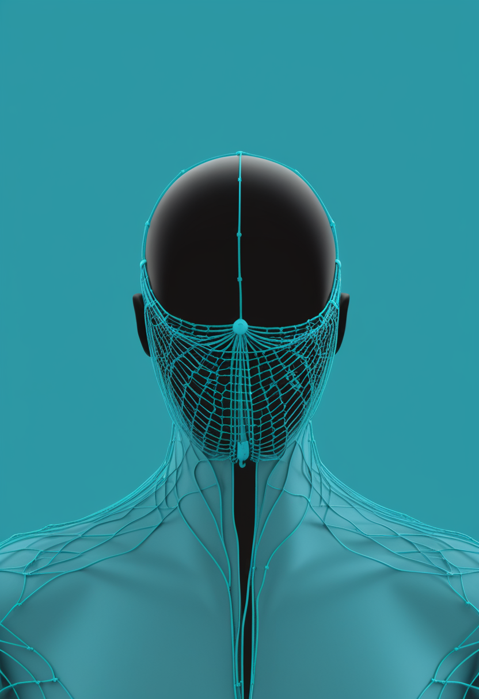
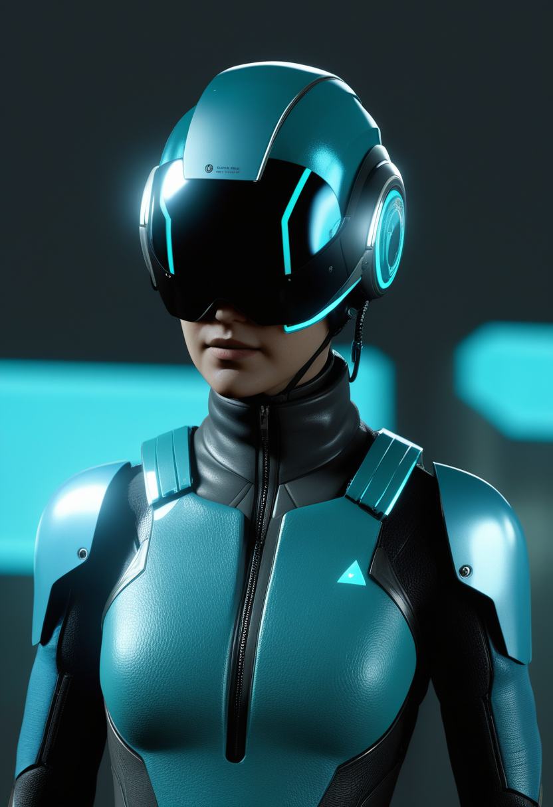
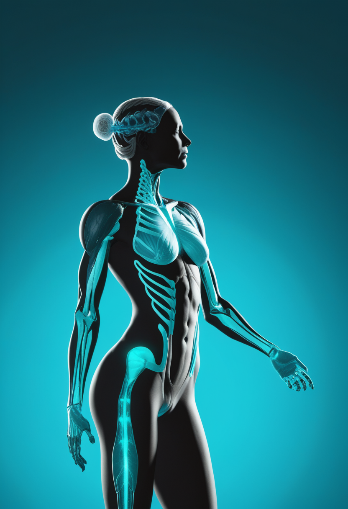
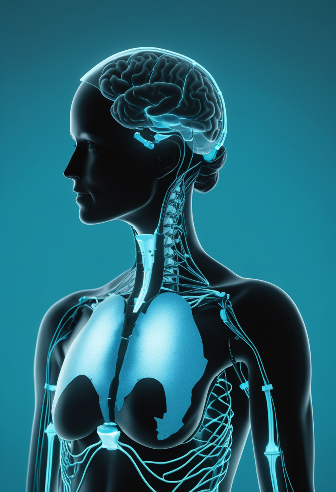
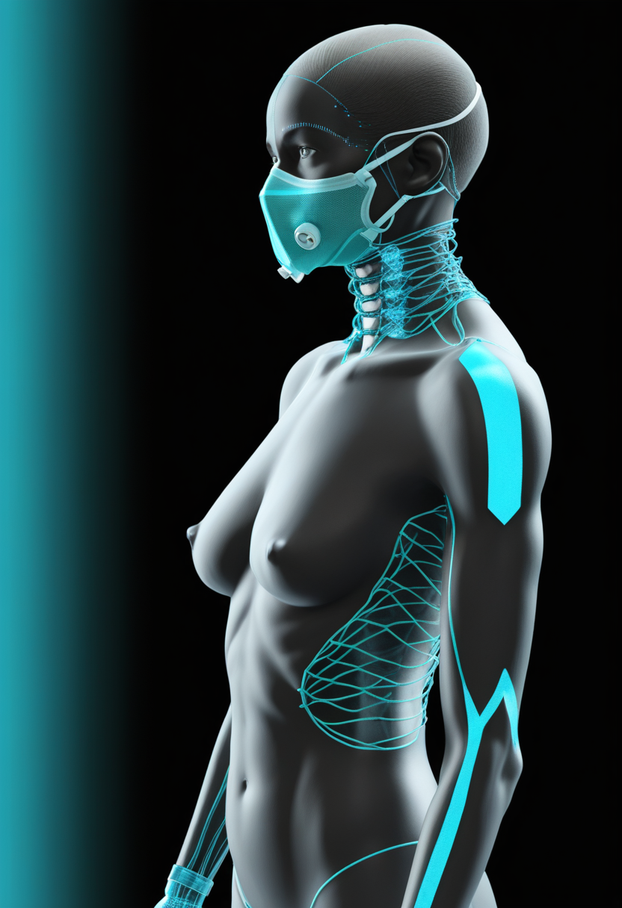
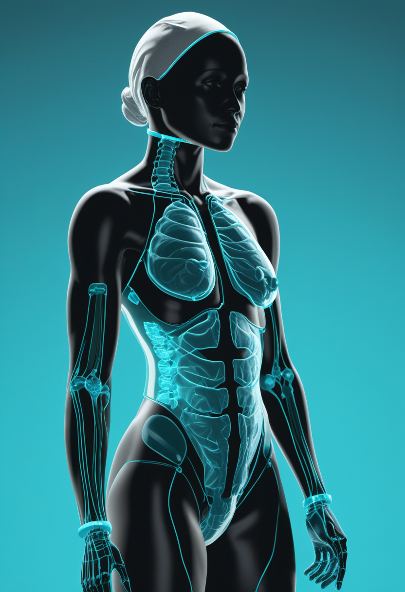
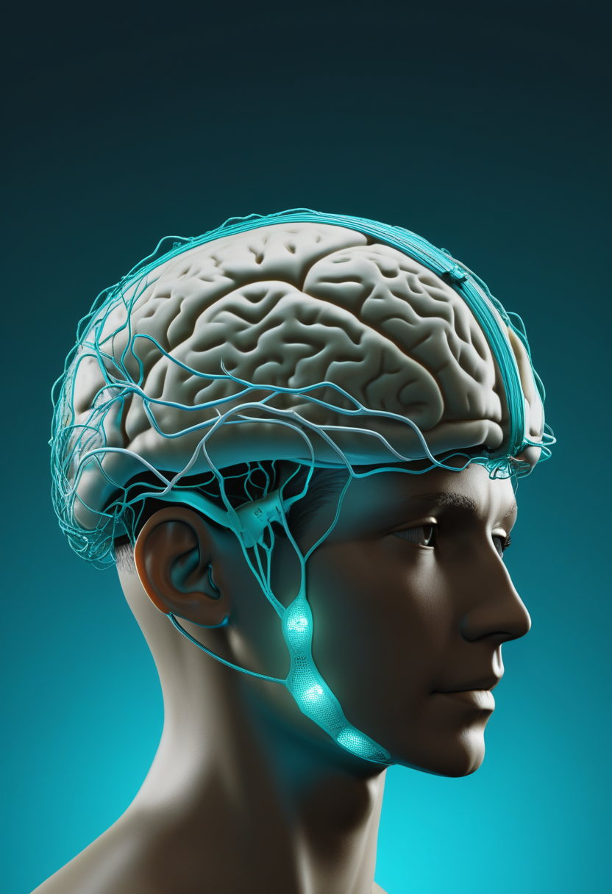
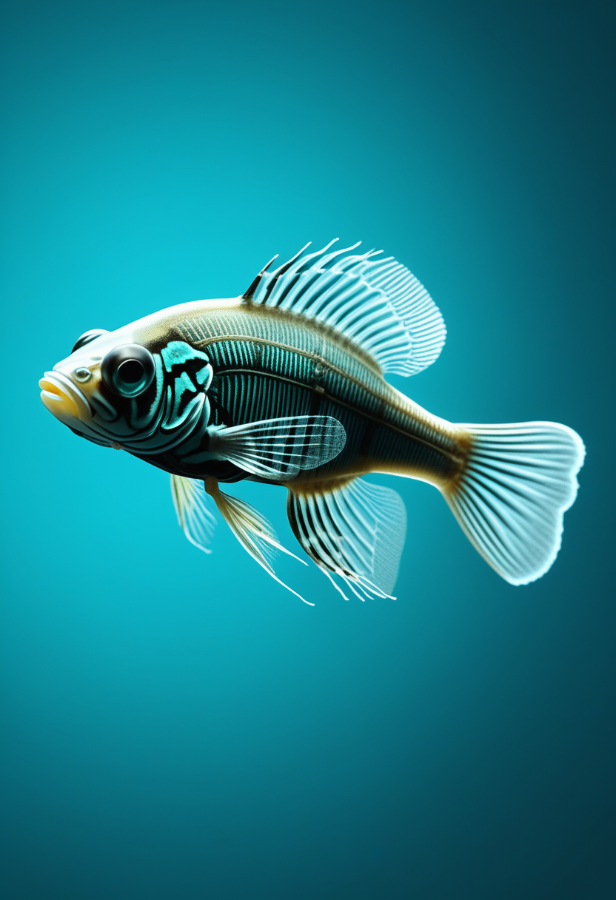

日曜日の便り。世界保健機関(WHO)は7月9日時点のコンゴ民主共和国(DRC)エボラ流行について、新規症例の約8割が既知感染者と疫学的関連を持たず、実際の流行規模は公式統計の2〜4倍に達している可能性があると警告した。確定症例は1,792例・死者625例に達し、交通の要衝キサンガニを擁するツショパ州への波及も確認され、被災地域は4州目に及んだ。同じ週、初めてのランダム化比較試験「PARTNERS」がブンディブギョ型エボラの治療薬候補の検証を開始し、ウガンダのマールブルグ孤発例は接触者調査で新規感染が確認されないまま推移している。BCIの世界ではSynchronが2億ドルの資金を投じてピボタル試験の準備を進め、Precision NeuroscienceはMedtronicとの提携で手術ナビゲーションとの統合を図る。宇宙ではCERNのLHCが最終運転で「新物理」の兆しを捉え、中国の天問二号は準衛星カモオアレワへの到達を果たした。デジタル自己の分野では、ショウジョウバエの脳の仮想再現という一歩が踏み出される一方、全脳エミュレーションは依然「30〜40年先」という慎重な見通しが保たれている。

7/11号でウガンダのマールブルグ確定例と共に「4州目飛び火の懸念」を伝えたコンゴ民主共和国(DRC)のブンディブギョ型エボラについて、WHOは7月9日、事態がさらに深刻化していると警告した。高官によれば新規症例の約8割が既知の感染者と疫学的関連を持たず、実際の流行規模は公式統計の2〜4倍に達している可能性があるという。確定症例は1,792例・死者625例に達し、検査陽性率が約5割に上るイトゥリ州ブニアでは検知の限界も浮き彫りに。交通の要衝キサンガニを擁するツショパ州への波及も確認され、イトゥリ・北キブ・南キブに続き被災地域は4州目に及んだ。

Scholar Rock社の抗ミオスタチン抗体アピテグロマブは5月にFDAが生物製剤承認申請(BLA)を受理して優先審査に指定し、審査期限(PDUFA)は2026年9月30日で変わっていない。第3相TOPAZ試験(188例)の結果が学術誌Lancet Neurologyに掲載され、既存のSMN標的薬治療に上乗せする形で運動機能の改善が示された。7/11号で報告したSAPPHIRE試験の追加解析(HFMSE改善者30.4% vs 12.5%)に続き、査読誌への正式なデータ掲載という規制上の裏付けが一つ加わった。
日本では2024年4月からSMAが新生児マススクリーニングの公費検査対象に加わり、自治体ごとの実証事業を通じて対象地域が拡大中(一部地域は2024年10月採血分から開始)。生後4〜6日の血液からSMN1遺伝子欠失を確認し、発症前治療につなげる体制整備が続いている。
アピテグロマブは査読誌掲載という規制面の裏付けを得て、日本では新生児スクリーニングの公費化が地道に地域を広げている。承認前の治験段階と、すでに実装が進む予防的検査体制が、SMA対策の異なる時間軸で並行して前進している。
血管内ステント型BCI「Stentrode」を手がけるSynchronは、2025年11月発表の2億ドルのシリーズD資金を投入し、複数の米医療機関での患者登録と商用化準備を進めている。2026年のピボタル試験開始に向けた最終準備段階にあり、成功すれば植込み型BCIとして初のFDA本承認(PMA)取得となる見込み。

低侵襲・硬膜下型の高解像度BCI「Layer 7 Cortical Interface」を用い、ジョンズ・ホプキンス大の研究チームが4名の患者でカーソル操作と音声分類のリアルタイム制御に成功したと報告した。同社は2026年1月にMedtronicと提携し、手術ナビゲーションシステム「StealthStation」との統合開発を進めている。
Neuralinkの大量生産方針(実現時期は未確定)に対し、Synchronは資金力で、Precisionは医療機器大手との提携で、それぞれ堅実な足場を固めつつある。

WHOは7月9日、DRCのブンディブギョ型エボラについて新規症例の約8割が既知の感染者と疫学的関連を持たないと明らかにし、実際の流行規模は公式統計の2〜4倍に達している可能性があると警告した。確定症例は1,792例・死者625例(前号7/8時点:1,759例・600例)に達し、検査陽性率が約5割に上るイトゥリ州ブニアでは検知の限界も指摘される。交通の要衝キサンガニを擁するツショパ州への波及も確認され、イトゥリ・北キブ・南キブに続き被災地域は4州目に及んだ。

7月2日、DRCでブンディブギョ型エボラに対する初のランダム化比較試験「PARTNERS」が患者登録を開始した。モノクローナル抗体MBP134と抗ウイルス薬レムデシビルの単独・併用効果を検証し、1,000例規模の登録を目指す。ワクチンも承認された治療薬も存在しないこの株にとって、初めて科学的に効果を検証する枠組みが動き出した意味は大きい。結果判明までは数か月を要する見込み。
実際の流行規模が公式統計の数倍に達しうるという警告は、封じ込めの前提そのものを揺るがす。ただし同じ週、初の治療薬治験という科学的な足場も同時に築かれ始めた。ウガンダのマールブルグ孤発例(生後17か月の乳児、7/2確定)も接触者調査を通じ、引き続き新たな感染は確認されていない。
LHCは2026年7月から4年間の大規模改修(Long Shutdown 3、HL-LHC化)に入る直前、素粒子の「ペンギン崩壊」と呼ばれる稀な変換過程で標準模型の予測とずれる挙動を確認した(5月発表)。今年はほかに2個のチャームクォークを含む新粒子Ξcc⁺⁺やBc*+中間子の観測も報告されている。改修後、より高輝度の衝突実験でこの異常が本物の「新物理」か検証される。
中国国家航天局(CNSA)の小惑星サンプルリターン探査機「天問二号」が7月4日、地球の準衛星である小惑星カモオアレワに到達し、初の近接画像を取得した。今後は試料採取地点の選定に向けたリモートセンシング観測を実施し、2027年の地球へのサンプル帰還を予定する。同時期、日本のはやぶさ2拡張ミッションも別の小惑星トリフネへフライバイを実施した。
LHCは運用終了間際に「新物理」の小さな手がかりを残し、天問二号は具体的な到達という一歩を刻んだ。日中双方の探査機が同時に別々の小惑星へ迫る光景は、基礎科学が観測から次の段階へ移りつつあることを示している。

米Eon Systems PBCが2026年3月、ショウジョウバエの脳を丸ごとマッピング・再構築し、高精細な仮想シミュレーション上へ「アップロード」したと発表した。コネクトーム(神経回路の完全地図)に基づく機能的エミュレーションの実証例だが、研究者らはヒト規模への適用にはなお大きな技術的隔たりがあると強調している。

2025-2026年時点のレビューでは、人間のニューロンをシリコン上で完全再現した例はゼロ、意識のアップロード実証例もゼロという結論が繰り返し確認されている。ハエ・ゼブラフィッシュではほぼ完全なコネクトームが得られつつある一方、マウス・ヒトはデータ量が増えても「機能的に正しいか」の検証が最大の壁として残る。
学術誌AI & Society(2026年)は、AIによる「デジタル人間思考双子」が単なる複製を超えて共創的パートナーになりうるかを東西思想の観点から論じた。個人の認知・心理をモデル化するAIシステム固有の倫理的リスクとガバナンスを論じた系統的レビュー(PRISMA準拠、6月5日)に続き、応用寄りの議論整理が進んでいる。
ショウジョウバエの脳アップロードは小さな一歩、全脳エミュレーションはなお遠い目標であることが改めて確認される一方、心をモデル化する技術をどう位置づけるかという哲学的な問いは、東西の知的伝統を横断して深まりつつある。
2026年7月12日、WHOはDRCのエボラ流行についてこれまでで最も踏み込んだ警告を発した――見えている数字は実態の一部に過ぎないかもしれない、と。だが同じ週、初めての治療薬治験という科学的な足場が築かれ始め、ウガンダのマールブルグ孤発例は接触者に新たな症状を出さないまま推移している。BCIの世界ではSynchronとPrecision Neuroscienceがそれぞれ資金と提携という異なる形で足場を固め、宇宙では中国とCERNが同時に次の一歩を刻んだ。ショウジョウバエの脳アップロードという小さな実証と、心をモデル化する技術への哲学的な問い――見えないものへの理解は、危機の警戒と並んで、今週もまた静かに前進している。
では、また明日の朝に。 — JaH